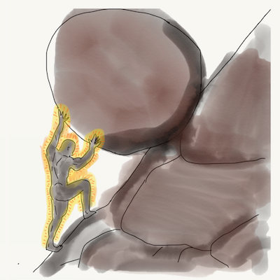

Hear me now, for I have seen things. A world of ash and soot. Bodies and brains toiling day after day, pushing boulders up steep mountainsides. When these burdens are overcome, when the peak is crested and victory achieved there is neither reward nor respite. Burning disappointment is the only prize, a hot frustration as the mighty stones are sent careening once again to the depths below in endless repetition. This, my friends is the future of agile development. For the past several years I have consulted with over 20 companies - from tiny startups to giant global enterprises. I have seen the inner workings, corporate cultures, and development practices across a wide range of industries. The trends are disturbing. I have seen the future and it is nasty and brutish. We can and must alter course. Resistance is NOT futile.
Why agile?
In the beginning, before agile, was the waterfall. We were doing multi-year projects, implementing reams of printed specifications, missing ship dates and blowing budgets. Most damning of all, we created products that didn’t meet the customer's needs. As big deadlines loomed, teams fell into death marches, with horrible periods of late nights and heated arguments, broken builds and streams of bugs without end. A game of lose-lose, the epitome of action not equalling progress.
Then a group of survivors hatched a plan of escape. Let’s break the cycle and put real customer satisfaction first. Let’s welcome changing requirements. Let’s deliver early and often. Let’s communicate across teams and reflect upon ways to improve. Above all, let’s promote sustainable development - a manifesto for practices that would enable sponsors, developers, and users to maintain a constant pace. Indefinitely. It made so much sense. And a few teams have indeed managed to succeed and thrive. Yet here we are, many of us, every 2 weeks. Surrounded by pizza boxes and despair. The points. The pressure. The last minute check-ins, the skimping on QA. The tortured definitions of “complete.” The pronouncements of SUCCESS (yay!) or FAILURE (boo!) every fortnight. OMG it’s happening again. And again. And again! Every 2 weeks. WTF?
"All around me are familiar faces
Worn out places, worn out faces
Bright and early for the daily races
Going nowhere, going nowhere..."
- Roland Orzabal, “Mad World”
Many organizations took their few, real deadlines - a Beta version, big conference demo, or the major public release - and rolled the incumbent pressure and "all hands on deck" mentality into a twice monthly cannonball run. Remember those large waterfall endeavors? Even if the product was too little or too late, there was at least a time to recharge at the end. To rest and to dream, a period of calm to plan a new route forward. But in many “agile” organizations, there is no rest and no peace. Just another boulder to push up another hill. Say what you will about the horrors of a waterfall death march, these teams at least got to sleep once they were dead. In stark contrast, many agile teams are rousted from their dirt naps before pushing a single daisy. The “big deadline” is now every sprint’s end. This is endless war. This is not about “keeping commitments.” This is not what agile was meant to be. This is not even madness. This. Is. Sparta.
Many so-called “agile” organizations have mistaken the process for the product. The daily “how confident are you this card will be done today?” The inevitable “pretty confident unless things don’t go as planned.” This is a bogus dance. This is project management theater. Even the notion of “delivering working software frequently” to maintain a healthy feedback channel is being corrupted. Rather than a brief reflection on progress toward the finish line, most end-of-sprint reviews fixate on “how well did we do compared to our guesses 2 weeks ago?”
The truth is that we are running a marathon here, people. Treating it like a series of independent races, a chain of back-to-back “sprints” is not the way to win a marathon, nor is it the way to build software. To be truly agile we iterate, we take stock of progress toward the finish line and we adjust as we go. No particular mile is more important (or detached) from any other. Don’t start, stop, start, stop, start, stop. Focus on the end goal and run, dammit, RUN.
Enough with the burndown charts. Enough with the sprint-end whiplash. Establish clear priorities and guidelines - set a vision of what success looks like. Slow occasionally to take stock and adjust as needed, but keep moving forward at a steady pace.
Let’s stop rolling boulders up and down meaningless hills, and let’s start moving mountains.
Originally posted at cognitect.com